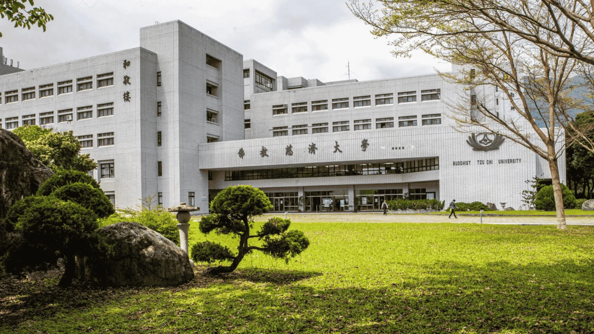
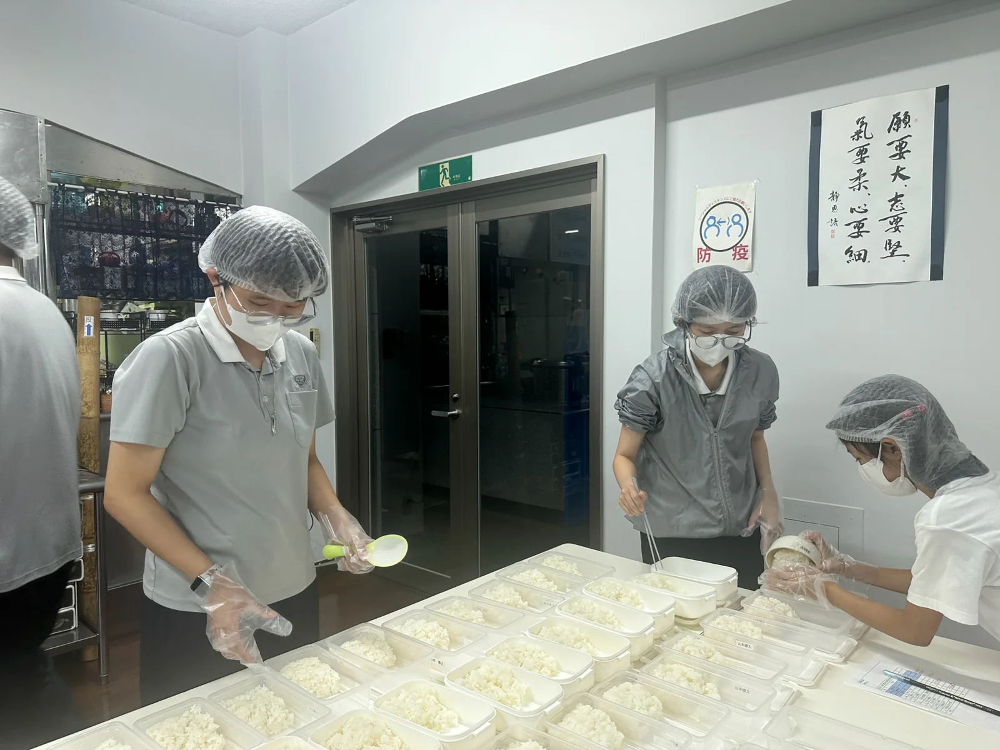
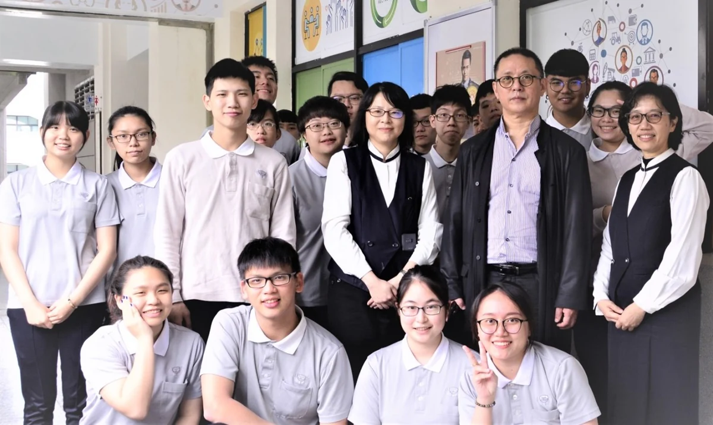

View detailsTaiwan · Workplace placementsWorkplace learning
Placement guidanceOfficial source

View detailsTaiwan · Workplace placements View detailsMalaysia · Overseas internship
View detailsMalaysia · Overseas internship Illustrative photoView detailsUnited States · Overseas internship
Illustrative photoView detailsUnited States · Overseas internship View detailsUnited Kingdom · Summer study
View detailsUnited Kingdom · Summer study
View detailsJapan · Overseas internship
View detailsInternational connections · Academic exchange at BMDYear-labelled notices are archives. Ask the department about current places, dates, and requirements.
No experiences match this selection.
A participant’s field journal of office work, languages, and service at Tzu Chi Japan.
Read the field journalClose the field journal+
Office work, Japanese translation, and community service in a non-profit organisation.
Usual office hours for this Tokyo placement; tasks varied with service activities.
Receipt records, subtitles, and service activities made accuracy and teamwork part of each day.
Sort and enter receipts, count coins, prepare mail, organise files, and make presentations.
Transcribe Master Cheng Yen’s talks, translate into Japanese, edit subtitles, and turn interviews into posters.
Prepare meals, pack bento, set up activities, and support community visits with volunteers.
Read the department’s Yoyogi reportTea ceremony, omamori making, safety practice, and health activities offered experience beyond office work.
No documents match your search.
The Tokyo feature is edited from a participant’s 2026 internship journal and presentation. Its activities and daily schedule describe that placement. Participant photographs are used alongside the department’s meal-preparation photograph; the full personal journal is not published here. Preparation guidance is based on official BMD internship publications.
Official internship resource centreRead the department’s Yoyogi reportBMD internship regulationsBMD internship operating guidelines